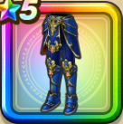

ガイアーラのよろい下
攻略班 7.5点 / 眠り耐性+5%オルゴ・デミーラへの耐性+10%怯え耐性+10%眠り耐性+5%怯え耐性+5%【バトマス】スキルの斬撃ダメージ+2%ヒャド属性斬撃・体技ダメージ+5%
くわしい特徴
【レベル別習得スキル】 Lv1眠り耐性+5% Lv5オルゴ・デミーラへの耐性+10% Lv8すばやさ+10 Lv10怯え耐性+10% Lv12【バトマス】スキルの斬撃ダメージ+2% Lv15ヒャド属性斬撃・体技ダメージ+5% Lv18眠り耐性+5% Lv20【バトマス】さいだいMP+5 Lv23守備力+7 Lv25怯え耐性+5% 【限界突破スキル】 1凸攻撃力+5 2凸守備力+5 3凸すばやさ+7 4凸さいだいHP+10